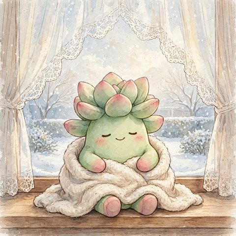
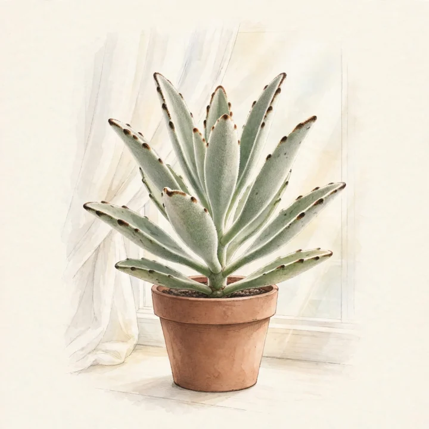
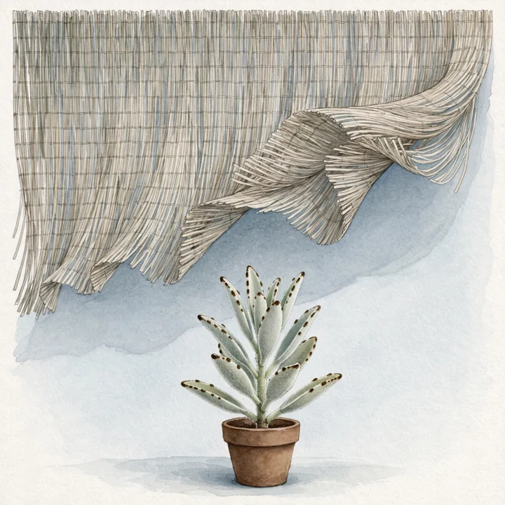
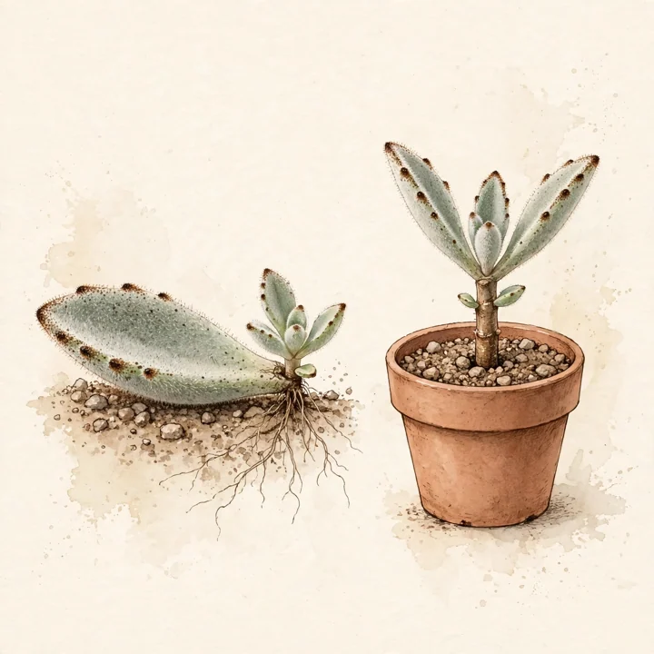
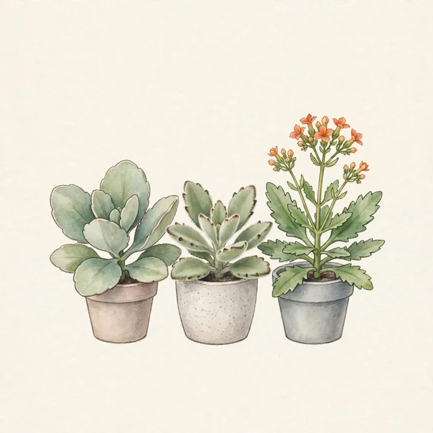

秋の準備
寒くなる前に、室内の居場所を
カランコエは霜や凍結に弱いものが多い仲間です。最低気温が下がり始めたら取り込みを考え、日中に光が入る場所を用意しましょう。
10℃前後は取り込みを考える目安。種類によって異なります。

カランコエは霜や凍結に弱いものが多い仲間です。最低気温が下がり始めたら取り込みを考え、日中に光が入る場所を用意しましょう。
10℃前後は取り込みを考える目安。種類によって異なります。

冬を室内で過ごした株を急に強い日差しへ出すと葉焼けすることがあります。まずは明るい窓辺から。冷え込みの心配がなくなったら、外の明るい日陰で少しずつ慣らしましょう。
暖かくなった日でも、夜の最低気温を確認する。

暖かさを好む仲間でも、真夏の直射や熱のこもった鉢は負担になります。遮光と風通しを確保し、土が乾いたかを確認してから水やりを。
暑さに強いからといって、真夏の日差しに強いとは限りません。

種類によって葉挿しや挿し木ができます。元気な株の葉や枝を使い、切り口を乾かしてから植えましょう。

花を楽しむカランコエも、葉の形や産毛が魅力の仲間もいます。同じ属でも姿や性質が違うので、育てて見比べてみましょう。